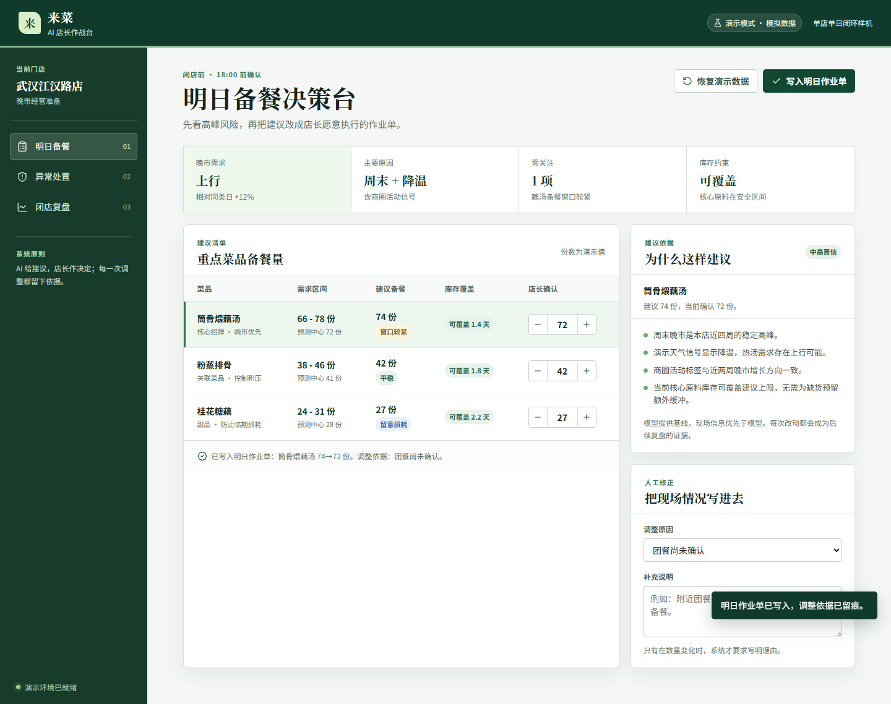

建议会被采用吗？
看建议采纳率，也记录店长为何修改；高采纳不等于建议正确。

项目逻辑
百店不是把同一套推荐复制 100 次。门店会遇到团餐确认、活动变化、库存约束与交接缺口。系统要做的，是让这些临场信息能够被写进决策，并在事后被看见。
18:00 前 / 店长确认
系统给出需求区间、库存约束和建议量；店长可以按当天现场情况改量，并必须留下理由。第二天复盘的不是“谁服从了模型”，而是这次调整解决了什么问题。
试点方法
报名阶段没有企业内部数据，不能先许诺结果。我们先设计一套能比较、能复盘的验证条件：建议是否可用、异常是否闭环、总部是否能据此进行辅导。
看建议采纳率，也记录店长为何修改；高采纳不等于建议正确。
从线索、认领、处置到复核，必须留下负责人、时限和结论。
总部看到的是待辅导动作，而不是脱离证据的门店“黑箱分数”。
模拟试点范围
模拟工作簿中的计算示例
使用边界
图像、温度、反馈与表单完整性只能触发“待复核”，食品安全与出品结论仍由责任人确认。
店长可调整备餐，品控负责人可关闭事项；两类动作都应保留理由、时间与责任人。
先校准营业日切分、字段缺失和系统版本，再讨论扩大范围或训练模型。
材料与记录
网页、文档和数据工作簿相互对应。评委可先操作样机，再按需查看研究、试点与数据口径。
样机演示